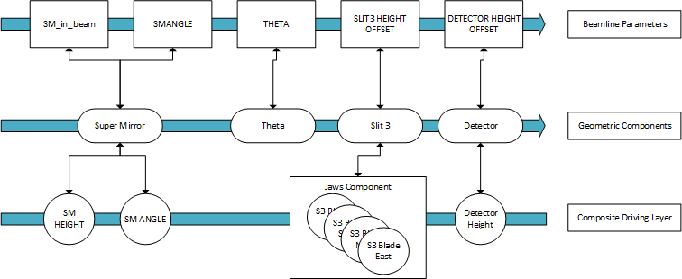

Exercise 1 - Parameters, Drivers, Components

Fundamentally, the Reflectometry Config defines a geometry model of the beamline, which we use to calculate relative positions for each axis in the model based on the current beam path. We think about this model in 3 layers:
Driversare wrappers responsible for talking to the low-level motor axes which report their positions in coordinates relative to the Natural Beam, i.e. the straight beam as it enters the blockhouse (dotted blue line in the diagram above)Parametersare high level parameters relative to the current (bounced) beam (solid blue line above). These provide an abstraction so the users do not have to worry about specific offsets as all values they interact with are relative to the reflected beam. They also provide functionality which lets you enter a setpoint but not action it until you press a separate action (“move”) button, as opposed to setting a value as soon as you hit enter on an OPI text box as is the behaviour everywhere els. (This was an explicit requirement)Componentsare the middle layer geometry nodes. This layer is responsible for translating between the two different sets of coordinates mentioned above. Each component represents one node of interaction with the beam e.g. a Slit or the Sample Stack.
Going forward, whenever any of these 3 terms are used, they will be referring to the definitions above.
In the reflectometry config, we define a list of items for each of these 3 layers. The items in this list must appear in the order in which they appear along the physical beamline as changes in one component trigger changes downstream only. These lists are packaged into a single Beamline object, which coordinates everything at the top level. Here is a diagram representing at an abstract level what the beamline model may look like internally:

To Note:
Parameters/Drivers have a many-to-one relationship to Components
Parameters and Drivers do not have to be a one-to-one match, even though often this is the case (like a height offset parameter on the POLREF bench will equally displace front and back height jacks).
In the following exercise, we will add a single item to the reflectometry configuration, a Supermirror, complete with Parameters and Drivers. Before we start making changes, let’s review the content of the blank config in front of you:
# Reference documentation for writing reflectometry configurations available at Reflectometry-Configuration
from ReflectometryServer import *
def get_beamline(macros):
"""
Returns: The beamline model
"""
#########################
# FIXED BEAMLINE VALUES #
#########################
add_constant(BeamlineConstant("OPI", "SURF", "OPIs to show on front panel"))
DISTANCE = 10.0
angle_of_movement = 90
# Modes
nr = add_mode("NR")
##############################
# BEAMLINE MODEL STARTS HERE #
##############################
return get_configured_beamline()
from ReflectometryServer import *: This is required to use classes and helper methods which are used to construct the model of the beamlinedef get_beamline: While the python config file gives you tremendous freedom to include arbitrary python code, this is the one method we expect to be here as the reflectometry server calls it on config load. It should return an object of typeBeamlineadd_constant(BeamlineConstant("OPI", "SURF", "OPIs to show on front panel")): This adds a PV intended to expose constant values that are used across the instrument so that these do not have to be defined in multiple places. In this case, we are creating the PVREFL_01:CONST:OPIwhich holds the value “SURF”. This PV then is used to populate the Front Panel OPI with hardcoded items for the named beamline.DISTANCE: This is a constant we will be using just inside the config file to space every item in the beamline model an equal distance apart for simplicity as it helps with understanding & verifying position tracking behaviour. This is just for the training course, you will not find this on a real beamline.ANGLE_OF_MOVEMENT: Another constant we will be using throughout the config. This lets us define the angle of movement of our physical components relative to the natural beam which defines our coordinate system, i.e. the angle between the dotted blue line and the dotted grey lines above. Usually this is 90 + 1.5 for TS1, and 90 + 2.3 for TS2 instruments. However, in this training course for now we will assume that the natural beam is level to the floor for simplicity.nr = add_mode("NR"): Modes are “presets” used to define which devices are in use & should automatically track depending on the type of experiment being run.
Exercise 1
Add the following to your beamline model.
A component for the Supermirror, which may reflect the beam
Two beamline parameters (for SM Height offset and SM angle)
Two drivers (for driving the SM height and SM angle axes) You can use the generic code below for reference:
component = add_component(Component("comp_name", PositionAndAngle(Y, Z, Angle)))
add_parameter(AxisParameter("param_name", component, ChangeAxis.[Axis parameter]))
add_driver(IocDriver(component, ChangeAxis.[Axis parameter], MotorPVWrapper("MOT:MTRXXXX")))
Some Tips:
There are different subclasses of Components:
Componentjust tracks the beam path in heightTiltingComponenttracks the beam path in height and angleReflectingComponenttracks the in height and angle and can also change the path of the beam for components further downstream
ChangeAxisis used to link a givenAxisParameterto a givenIocDriver. For more information on the different options for `AxisParameter, see hereMTRXXXXshould be replaced with the appropriate motor axis. In this case, we are looking for “Supermirror Height” and “Supermirror Rot” in the table of motors.
To Test
Once you are done making changes, you can load the updated config by restarting the REFL_01 IOC. You should be able to see 2 parameters in the “Collimation Plane Parameters” tab, that, when set, will move the appropriate Galil axes.
Troubleshooting:
The Reflectometry server gets stuck Initialising - Likely trying to monitor a PV that does not exist, check the parameters on your IocDrivers
The Reflectometry server reports an Error status! - There is an error somewhere in your config file: Check the log in
/Instrument/var/logs/ioc/REFL_01_<current date>.logfor stack tracesParameter is not showing up! - Check you have defined the right ChangeAxes, if not they may show in “Other Parameters” instead.
Parameter is there but I can’t set it! - Check you can move the motors in question from the low motor table. If so, check the parameter you are setting and the IocDriver for the Galil axis have matching ChangeAxes